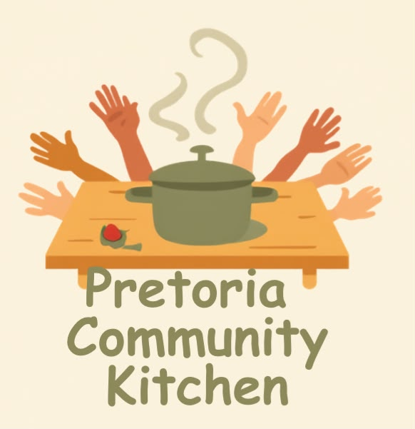
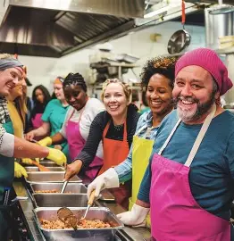

|
 |
Pretoria Community Kitchen |
Pretoria Community Kitchen is a community organisation that aims to help people to experience food insecurity.
The organisation brings volunteers, donors and community members together to prepare and provide meals to people who need support.

Our mission is to fight hunger with dignity by providing nutritious meals and hope to vulnerable families in and around Tshwane.
Our vision is that no person goes to bed hungry.